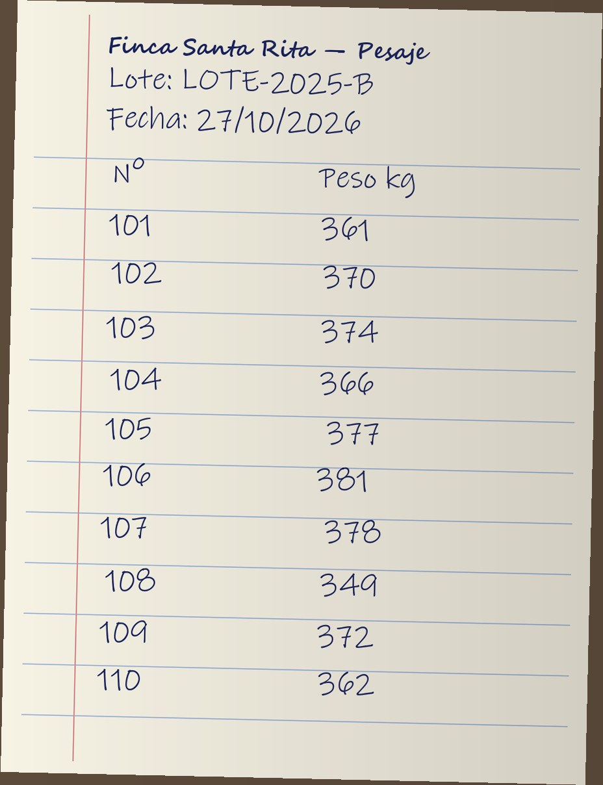
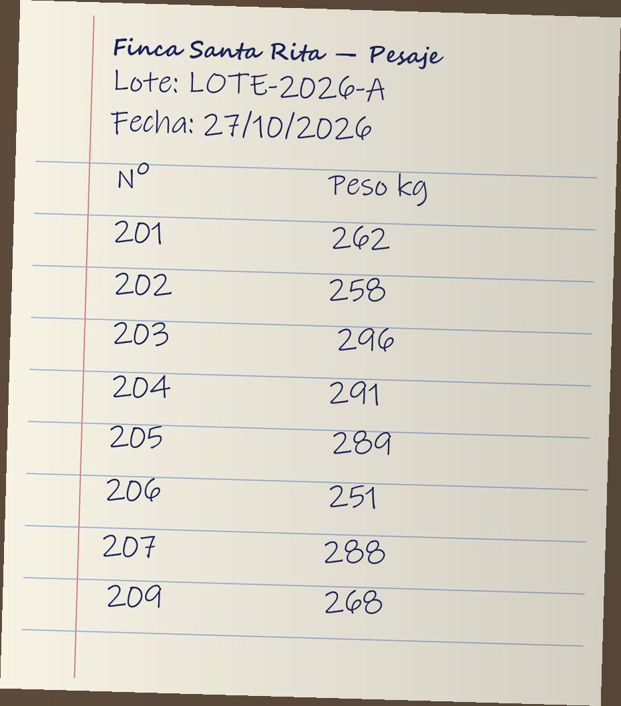
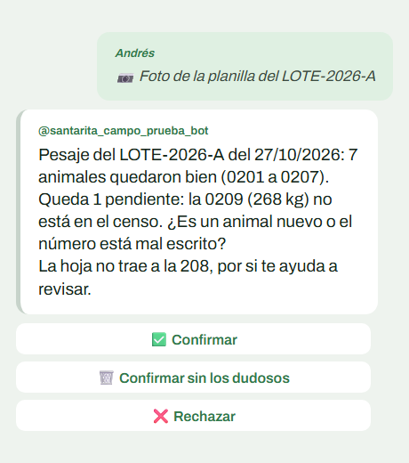
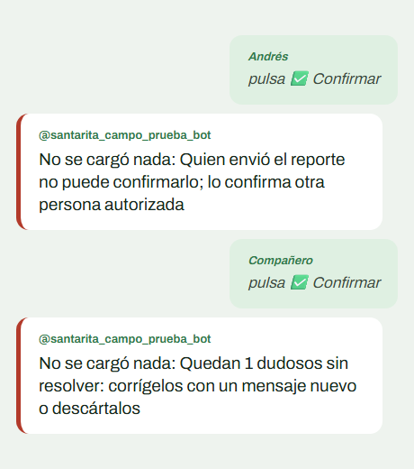
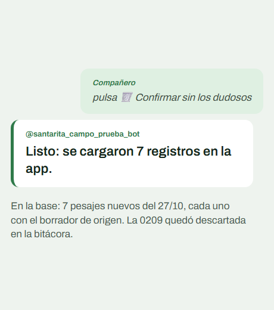
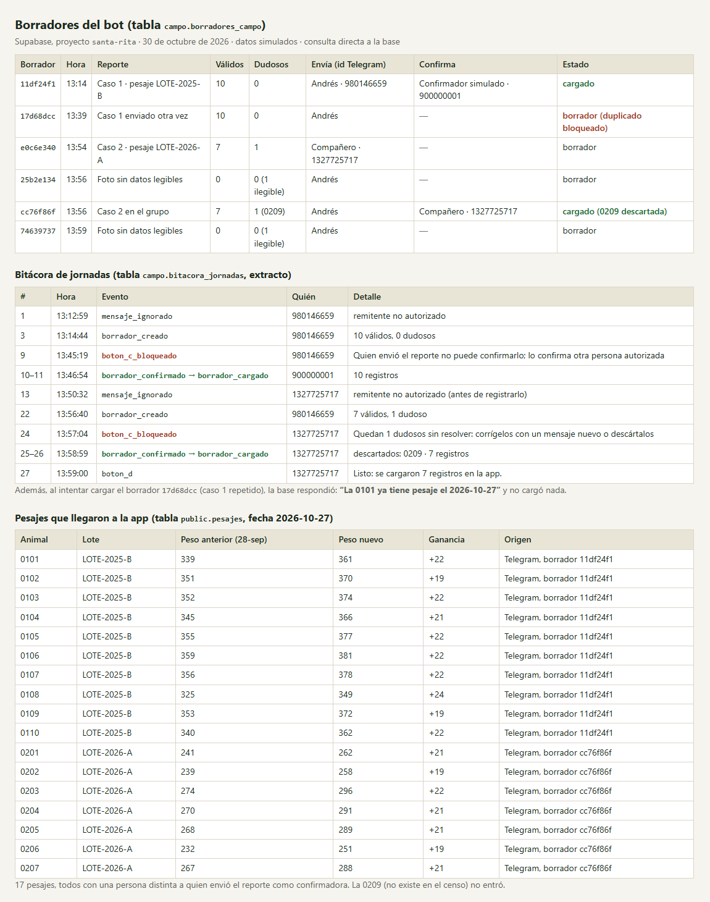

Arnés de IA para los reportes de campo de Finca Santa Rita
Andrea Urdaneta, Juan Andrés Lacouture y Andrés Sánchez
Taller Harness Engineering, Gerencia de TI, Universidad de La Sabana

¿Ve el error? La 209 no existe: el lote va de la 201 a la 208.

El modelo pone la inteligencia. El arnés pone lo que lo vuelve confiable en un trabajo real: qué sabe, qué puede tocar, cómo se comprueba y cómo mejora.
Orientan al modelo: le dan contexto, recetas y un orden de trabajo. Ayudan, pero el modelo podría ignorarlas.
Comprueban el resultado. Unos son reglas fijas en código; otros son una segunda IA que juzga lo ambiguo.
Lo que el modelo no puede saltarse, porque vive fuera de él, y el registro que permite retomar el trabajo.
Desde el corral, sin abrir la app.
Remitentes autorizadosSolo puede leer. Lo que no entiende queda ilegible.
Contexto y skillsCenso, cambio de peso de más del 15 %, fechas y duplicados.
Verificación"¿La 0209 es nueva o está mal escrita?"
Verificación con IASolo entonces la base carga los pesajes.
Guardarraíles y memoria| IA sola | Con arnés | Arnés mejorado | |
|---|---|---|---|
| Casos base correctos | 3 de 6 | 6 de 6 | 6 de 6 |
| Todos los casos | 4 de 7 | 7 de 9 | 9 de 9 |
| Correcciones a mano | 3 | 2 | 0 |
| Pesos inventados o en la res equivocada | 0 | 0 | 0 |
En vivo, por Telegram: 17 pesajes cargados, 0 datos malos.



30 de octubre de 2026, con datos simulados. El chat se recreó con los mensajes exactos que respondió el bot.

Bitácora en Supabase, 30 de octubre de 2026
La IA leía bien. Fallaba por lo que no podía saber: qué reses existen y cuánto pesaron el mes pasado.
Las instrucciones y las skills guían. Lo crítico lo verifican el validador y la base, no el prompt.
Las mejores mejoras salieron de fallas que no imaginamos: un tratamiento duplicado y, en vivo, los botones que no respondían.
La IA nunca escribe en la app. Un borrador solo se carga cuando otra persona lo confirma.
Siguiente paso: probarlo con una jornada real de la finca y medir cuánto tiempo ahorra por pesaje.